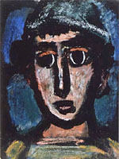
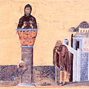

Hoy es la fiesta de la Beata Isabel de la Trinidad.
Monja carmelita francesa, muerta joven, 1880-1906. Beatificada en 1984, y una de los pocos cristianos "modernos" citados en el Nuevo Catecismo ...
Con estos
datos, se impone la comparación con Santa Teresita de Lisieux. Muchos puntos en común, en efecto.
Y también muchas diferencias, oposiciones incluso,
a modo de complemento, en lo que al foco doctrinal
se refiere. Teresita trae la doctrina del "caminito",
de la infancia espiritual; alegrarse de la propia
insignificancia. Isabel, la "alabanza de la gloria",
alegrarse de la grandeza de Dios.
Impresionada al descubrir
el versículo de San Pablo :
'Dios nos ha creado para la alabanza de su gloria'
adopta para sí el nombre/lema "laudem gloriae",
y a eso se consagra: a alabar (con su vida) la gloria de la Trinidad.
Su complementariedad con Teresita -que acá probablemente
esquematizo demasiado- es cosa de Urs von Balthasar,
de su libro sobre Santa Teresita; dice UbB que
la contemplación de la Trinidad no juega un papel central
en la espiritualidad de Teresa, y él
(yo me lavo las manos, qué se yo...)
lo explica y lo contrapone con Isabel, así:
-
...El hecho de que Teresa
no llegue a ver más de la vida íntima de la Trinidad ni de
su irradiación en la economía de la salud, tiene su
fundamento profundo en la peculiaridad de su «existencia
teológica».
Su doctrina está demasiado referida a su propia vida, a su demostrabilidad en sí misma, para que una verdad tan independiente y tan objetiva como la Trinidad, se le hiciera existencialmente comprensible.
Sus mismas escasas visiones están también totalmente referidas a sí misma; ve unos diablillos, pero los ve que huyen de ella. Ve a la Virgen que le sonríe, que se adelanta hacia ella, y toda la visión recibe una referencia completa a su curación.
De este modo, su camino no puede resultar un camino explícitamente trinitario, pues para ello se necesitaría una base existencial totalmente distinta y casi inversa a la de Teresa.
Una Isabel de la Trinidad podía desenvolver una doctrina marcadamente trinitaria, por estar ella dirigida completamente hacia lo objetivo e independiente del sujeto, porque su historia y su personalidad forman una base mínima, la estrictamente necesaria para poder percibir en absoluto. Lo que a Isabel le falta en existencialidad, le sobra a Teresa.
von Balthasar - Teresa de Lisieux
Faltan menos de cuatro años para la primera guerra mundial, y veinte para la crisis...
El mundo -Francia sobre todo- todavía cree en el progreso y en la ciencia. Por entonces, la aviación encarna algo de esa especie de entusiasmo religioso que los intelectuales han ido inyectando en las masas.
Algunos
-
18/11/1910. Leo en el Journal:
- "Queda completado el circuito del Este.
Regreso triunfal, Siempre más allá, siempre más
alto [...]
Troyes, Nancy, los Vosgos, el Mosa y las Ardenas,
Flandes y la Isla de Francia [...] Los hombres alados han hecho
ese viaje, y su gloria es infinita [...] los habitantes de las
ciudades y de los campos miran el cielo, no ya para buscar
y ver en él a un Dios, sino porque acaban de descubrir a un
hombre: Prometeo ya no está encadenado sobre su roca, y
cuando venga el buitre para devorarle las entrañas, él
subirá hasta el Olimpo, tan alto
como la misma ave, y no en busca del fuego sagrado, sino
a llevarlo al cielo".
20/11/1910.- "París honra a los aviadores".
He ahí lo único
que se lee en los diarios. Toda vida intelectual está
en
suspenso. Hasta la política ha sido aplazada.
Resonante
triunfo de los vencedores del Circuito del Este.
Se los creería retornados de Marathon o, de Salamina.
Recepción en el ayuntamiento, banquetes y discursos,
inscripción en el Libro de Oro de la Ciudad, recompensas y
condecoraciones. Al paso de los héroes, estremecimiento
religioso de todas las espigas del orgullo y de la
estulticia. ¡Ay de quien eleve una voz de protesta !
Pienso en Carlyle. ¿Qué diría ese terrible despreciador de
la multitud?
Pero el mismo orgullo se desalienta cuando se
piensa que el "problema" está aún por resolverse, que
esos
pobres seres no han descubierto nada; que nada pueden
prometer sin mentir a los demás o a sí mismos; que lejos
de haber realizado la "conquista del aire", está a merced de
él y que sus vidas dependen a cada instante de ese Espíritu
invisible que "sopla donde quiere, sin que nadie pueda decir
de dónde viene ni a dónde va"; que en realidad, no son más
que acróbatas, y que a la postre sus esfuerzos son
absolutamente estériles. Por lo que hace a la multitud, nada
más lamentable. Es el complejo de infantilismo en un pueblo
senil, es la chochera y la muerte próxima.
22/11/1910.
"El aeroplano, instrumento de paz"
Esto es lo que desde hace varios días
leo en los diarios. Se proyecta un "circuito de capitales",
o sea una carrera de aviación que partiendo de París vuelva
a esta metrópoli después de tocar Berlín, Bruselas y Londres.
Parece que esto afianzaría la paz, pero no se dice por
qué.
El Journal, bajo el título estúpido de "Máquina de paz", ha
publicado un artículo de una excepcional idiotez, donde
se habla de nuestros campeones, que "trazan en el azul la
historia de la obra de paz y de concordia".. ., de "nuestros
reyes del aire", de "una cabalgata del espacio", de
"doscientos cinco mil francos de premio" ... , de "deporte
heroico" ... y hay frases como éstas
-
"En vano buscaríase al
divo del aire que falte al llamado[...]
Los conquistadores del
aire se superarán a sí mismos... Entre muchos otros
ilustres, está Legagneux, el golfillo de París, el Gavroche
de la atmósfera, el mimado de los organizadores de
manifestaciones, porque se ríe de los vientos... Está
Latham, cuya serenidad es olímpica [...] Hay un tercero, que se
ha revelado repentinamente como un hombre nacido para el
empíreo... Aquél otro es el virtuoso del aire, que conduce
su aparato como, si fuera un instrumento de música[...] Libro
de Oro de la aviación [...] Prodigiosa falange [...] Inolvidable
manifestación de belleza y una de las más grandiosas que se
haya ofrecido jamás a las miradas humanas"
3/12/1910. Mucho me habría asombrado que Hanotaux no tuviese nada decisivo que decir en materia de aviación. Acaba de aparecer un artículo suyo, titulado: "¡Más aire! ¡Más espacio!"...
-
"Dad facilidades, ensanchad, abrid las puertas y ventanas; siempre
más aire, más luz, más espacio... ¡He ahí la verdad! [...]
Unid a los pueblos en lugar de separarlos [...] el Cielo para
todos, en amistoso entendimiento entre las potencias [...]
Mapas del cielo [...] Tanto ignoramos hoy la atmósfera, como
nos era desconocida el Africa hace treinta años. Es
necesario estudiarla: he ahí todo [...] Ningún argumento vale
lo que un buen golpe de timón hacia el progreso".
8 de noviembre de 2003: Aunque ya la astronáutica ha perdido buena parte de la mística que tenía hace treinta años- tenemos que emocionarnos, porque la Voyager 1 ha llegado al borde del Sistema Solar. Y el editor de Clarín nos da su consabido sermón progre-cientificista, babeando su payasesca admiración por el payasesco Carl Sagan : "un hombre que nos contó como pocos historias maravillosas y que, desde la ciencia, nos hizo siempre apreciar la vida.".
Y no sólo relaciona lo de la Voyager con el cumpleaños de Carl Sagan: en un alarde de enciclopedismo periodístico, también encuentra una coincidencia para la fecha de su lanzamiento: " en el 77. Fue un día antes de que aquí el dictador Videla iniciara su primer viaje a los Estados Unidos." (???????).
Y como puede verse, el tono -y el sentido del ridículo- no deja nada que envidiar a los franceses de hace un siglo:
-
Con la Voyager fuimos más allá de los límites: su hazaña es
un triunfo del espíritu humano...
le siguen arrancando secretos al Universo. Lo que hicieron es deslumbrante...
Recibió críticas por su mensaje, sobre todo por la ausencia de un concepto de Dios. Pero decía que "quienquiera que lo descifre se llevará una buena impresión de los seres humanos"...
Mientras en nuestro país muchas veces no podemos librarnos del pasado, hay una nave que avanza hacia el futuro. Ningún objeto humano llegó tan lejos. Las preguntas son infinitas como el espacio. ¿Dónde termina el espacio? ¿Termina? ¿Tiene un límite? Y si lo tiene: ¿qué hay del otro lado? Tal vez haya que escuchar mejor los mensajes que la Voyager nos envía a la Tierra. Tal vez ese mensaje, simbólicamente, sea que el espacio y el tiempo inconmensurables nos obligan a ampliar la mirada, a ver más allá, para no sucumbir en esta conflictividad íntima, a esta estrechez, esta ignorancia...
De la vida de Santa Catalina de Siena.
El Raimundo aludido, fraile dominico, fue después su biógrafo; aquí, no hacía mucho que la conocía; y al parecer se sentía un poco desconcertado, casi escandalizado, por el carácter fuerte de esta terciaria analfabeta y joven, que hablaba con demasiada autoridad ....
-
... Raimundo había escrito con fervor la vida de la difunta Santa
Inés, pero he aquí que se hallaba en presencia de una santa
viva y joven, cuya doctrina era intransigente y que le
imponía inexorablemente su voluntad como si fuese la de Dios.
—"Si sois realmente la que pretendéis -le dijo un día-, y si vuestras relaciones con Dios son como las describís, pedid a vuestro Esposo celestial que me conceda el mayor bien, es decir, el perdón de mis pecados".
El dominico hablaba sinceramente.
—"Quiero estar tan seguro de ello -dijo- como si recibiera una Bula de Roma".
Catalina sonrió:
—"Bueno, recibiréis vuestra Bula".
Era el anochecer; cada cual entró en su casa.
Pero al día siguiente por la mañana, cuenta Raimundo «mis
achaques habituales me obligaron a guardar cama, y uno de
mis amigos, el hermano Niccolo
da Cascina de Pisa, muy amado de Dios y de los hombres,
acudió a mi lado.
Estábamos entonces de viaje, y Catalina,
enferma, quebrantada por la fiebre, recibía hospitalidad en
un monasterio de religiosas de nuestra Orden, situado no
lejos de mi residencia.
Cuando supo que yo estaba indispuesto se
levantó, diciendo a la hermana que se hallaba con ella:
—"Vamos a visitar a fray Raimundo, que está enfermo".
La hermana le contestó que no era preciso y que aunque lo
hubiese sido, Catalina estaba mucho peor que yo.
Vino, con todo, y me preguntó:
—"¿Qué tenéis?"
Y aunque mi debilidad me hubiera impedido
conversar con el hermano Niccolo, me hice violencia y
contesté:
—"¿Por qué habéis venido? Estáis más enferma que yo".
Pero en seguida, según su costumbre, se puso a hablar de
Dios y de la ingratitud con que ofendemos a tan gran
bienhechor.
Sintiéndome de pronto confortado, y deseando
obedecer a las exigencias de la cortesía, dejé mi lecho para
sentarme en el banco cercano a la cama, sin pensar para nada
en la promesa de la víspera.
Y, mientras ella continuaba
discurriendo, mi alma tuvo una visión tan clara de mis
pecados que tuve la impresión de comparecer desnudo ante mi
Eterno Juez y de ser condenado a muerte como los criminales
que son llevados al lugar del suplicio.
Comprendí entonces la clemencia y la bondad de este Juez,
que en lugar de condenarme. no sólo me salvaba de la muerte,
sino que cubrió mi desnudez con sus propios vestidos, me daba
asilo en su casa y después, tomándome a su servicio,
convertía por su misericordia la muerte en
vida, el temor en esperanza, el dolor en alegría, la
ignorancia en honor.
Estas consideraciones, o por mejor
decir, estas visiones deslumbradoras hicieron surgir de mi
corazón tan duro torrentes de lágrimas, y prorrumpí en tales
sollozos que me ruborizo al confesarlo; temí que mi corazón
se rompiese en el pecho. Pero la prudente virgen, que sólo
había venido a buscarme con este fin, se calló y me dejó
llorar.
Mientras lloraba, recordé lo que le había pedido la
víspera, y la promesa que me había hecho
y levanté los ojos hacia
ella para preguntarle:
—"¿Es ésta la Bula que os pedí ayer?"
—"Si, ésta es la Bula", contestó ella, levantándose para
retirarse, y si no me engaño, puso la mano derecha sobre mi
hombro diciendo: —"Acordaos de los dones de Dios"...»
-
El tiempo nos hace violencia; es la única violencia.
Otro habrá que te sujetará y te llevará a donde no quieres ir; el tiempo lleva a donde no se quiere ir.
Aunque me condenen a muerte, no llegarán a ejecutarme
si en el intervalo el tiempo se detiene.
¿Es lícito desear que el tiempo se detenga, que se detengan
las estrellas, por espantoso que sea lo que nos puede ocurrir ?
La violencia del tiempo desgarra el alma; por su desgarro
se entra en la eternidad.
Es pecado sustraerse al tiempo.
Simone Weil
También recuerda uno lo del Apocalipsis: el ángel que jura que
"el tiempo no será"... cosa que en este contexto puede verse
como una promesa más bien consoladora...
Que la rugosidad, la aspereza, la indocilidad del
universo (al revés de nuestras imaginaciones/fantasías/utopías
debe ser amada, porque esa resistencia es signo de que
somos criaturas (el dolor es caricia de Dios), es un leitmotiv
en Simone, y no es original. Esto de incluir al tiempo
entre esos signos, indóciles a la parte baja de nuestra alma,
y por eso mismo dignos de amor, es algo que nunca se me
había ocurrido.
Imposible no recordar -y me parece ahora una idea echada a perder,
o una anti-sabiduría- el cuento de Borges
El
milagro secreto. Se trata de un hombre condenado a muerte
que, precisamente, es obsequiado con un milagro divino: para terminar
su obra literaria (irónico motivo para justificar la vida de un hombre...
y la existencia del Creador), Dios detiene el tiempo en todo el universo
salvo en la conciencia del protagonista.
El cuento me parece una joyita, en la forma;
una miseria, en el fondo. Verdad es que, si estoy lejos
de despreciar a Borges, también estoy lejos de quererlo.
Y el "dios" que suele imaginar
me resulta más monstruoso -una especie repulsión parecida a la que
inspira la demencia- que el imaginado por el -menos blasfemo- Lautremont.
En todo caso, a la luz de Simone, todo se ve mejor, me parece a mí:
"El tiempo nos desgarra; pero sólo por ese desgarro se accede a la eternidad" (o sea: se eleva uno por sobre el tiempo).
PS: Veo ahora que este es el post número 1500 en este blog; y hace 15 días cumplimos un año y medio. Cómo pasa el tiempo...
El título de un mail (spam) que me llegó hoy, de parte de un licenciado que ofrece sus servicios en computación:
-
"Todo lo que Ud. quizo hacer en Windows y no pudo"...
Clarín: las noticias que importan:
- La semana pasada, el equipo de Puntodoc pidió cambiar la hora según las épocas del año para reducir el consumo energético. En CQC rubricaron el proyecto y prometieron avanzar con la cruzada.
Se cuenta -o así lo recuerdo- que, habiendo disfrutado San Francisco de Asís junto con un compañero de la hospitalidad del abad de algún convento, al momento de la despedida, éste se encomendó a las oraciones de los frailes. Francisco le dijo que rezarían por él, y salieron al camino. Poco después, cuando se disponían a hacer las oraciones vespertinas, Francisco se apuró en recordar: "Recemos primero por el abad, como se lo hemos prometido".
Esta historia, tan sencilla y tan ausente de pintoresquismo, daba pie
al biógrafo para recordar -y para contrastar- qué fácil resulta
a tantos cristianos decir "Rezaré por vos"... y luego
dejar que a esas palabras las lleve el viento.
Es verdad que en esa promesa puede haber una fórmula de cortesía
y de estima, no necesariamente vacía (en tanto expresan un deseo
sincero de bien para el prójimo); pero también es verdad que hay
algo de hipocresía en eso, si la promesa no se hace en serio.
Pero peor, se me ocurre ahora, es otro caso: cuando ese tipo
de cristiano celoso, muy seguro de su cristianismo, tras una disputa
inútil con un prójimo y desesperando de hacerlo salir de su error
(ateísmo, paganismo , cristianismo herético ....), remata con un
"rezaré por vos". (Yo estoy en la verdad, vos no; pero, fijate qué
generoso lo mío -conmovete!- rezaré para que Dios te lleve a
ver la verdad... como yo).
Es peor, se cumpla o no la promesa; porque aunque
se cumpla materialmente, difícil será que se cumpla realmente: uno
no puede rezar por el otro para llevarlo a "mi" verdad.
Una especie de inelegancia,
de torpeza, en el mejor de los casos.
Puro fariseísmo, en el peor de los casos (nada infrecuente, me parece).
Del diario de Vizcaíno Casas:
- ... Paso la tarde leyendo Los cuadernos de Rusia, de Dionisio Ridruejo, que acaba de editar Planeta.
Impresionante testimonio de la personalidad delicada, sensible, humanísima, de Dionisio ¿Cómo es posible que yo, durante algunos años, tuviese una opinión tan errada sobre él? Me arrepiento absoluta, sinceramente, por mi tozuda incomprensión. Con la esclarecedora perspectiva del tiempo, que siempre acaba imponiendo la verdad, juzgo ahora en su admirable dimensión de impagable escritor, de arrebatado poeta a este hombre que, por desgracia, murió cuando más falta hacía. Una pena.
31 de octubre de 1978
Sólo leí esos Cuadernos, especie de diario que cuenta su participación en la "División Azul". La tal división —y siento una especie (nada sana) de placer al pensar que esto erizará la piel de algún lector políticamente correcto— fue integrada por voluntarios franquistas y falangistas en 1941 para luchar, con el Eje y contra la URSS, en el territorio ruso. Y si esto automáticamente le recorta ciertas (muchas) simpatías, Dionisio termina de perder amigos al pelearse con Franco, exiliarse, y fundar más tarde la Unión Social Demócrata Española.
Todo lo anterior es para tomar con pinzas; toco de oído y es probable que muchos datos sean inexactos - se agradecen correcciones.
De todas maneras, con tan poco, me queda la impresión, un poco arbitraria acaso, de que es un alma cercana.
-
Ya solo en mi corazón
desiertamente he quedado;
el alma es como una nieve
extendida sobre el campo,
la tierra desaparece,
el cielo niega el espacio,
las cosas que me rodean
rechazan la luz del hábito.
¿De qué me sirven los ojos?
¿De qué el aroma sin rastro?
¿De qué la voz sin el nombre
que se despoja del labio?
El tiempo de mi esperanza
es como tiempo pasado.
Ya solo en mi corazón
desiertamente he quedado
De paso (por el link que puse de Fray Luis), y a primera vista, parecería que la gente de la Biblioteca Virtual Miguel de Cervantes está haciendo un trabajo de buena calidad, y con material bastante abundante. Para tener en cuenta.
En otros tiempos, había listas negras. Censura. Estaba prohibido difundir o hablar mucho de ciertos intelectuales o artistas, por cuestiones políticas e ideológicas.
Cosas del pasado. Ahora, hay libertad y completa tolerancia.
Clarín -el diario que lee media argentina, el diario centrado (no es ni página 12 ni infobae)- informa de todo lo que pasa. Lo que sucede a los famosos, por ejemplo. La muerte de los escritores españoles, por ejemplo.
Así, acá dedica una nota entera y abultada para informar de la muerte de Terenci Moix. Ah... nno lo conocías ? Bueno... era trasgresor, amigo de Manuel Puig... y anti-franquista, naturalmente.
Acá, otra nota abultada y con anexos, a la muerte de Manuel Vázquez Montalbán... Ah, no lo conocías ? Bueno, ... "era un hombre muy comprometido con la izquierda"; "compromiso político" , "se entrevistó con el subcomandante Marcos". Y luchó contra la dictadura franquista... of course!
Allá por principios de año murió José María Gironella. Ah, ese sí es conocido.... No sé cuántos millones de libros vendidos, un tipo moderado y bastante honesto e inteligente. Lástima, no era del todo antifranquista ... hasta pretendió novelar la guerra civil desde una supuesta neutralidad; no tira palos contra el franquismo solamente, también contra los rojos... hmmmm... Bueno, pero tampoco era franquista... zafa... ? hmmm... bueh, le dedicamos seis líneas en los "breves", entre el sudamericano de fútbol y una redada de traficantes de marihuana. Demasiado.
Anteayer murió Vizcaíno Casas. Otro conocidísmo, con
más de cuatro millones de libros leídos (que no simplemente
"vendidos"). Pero -ay!- era de derecha... Y franquista, o algo así. Uf.
Y encima llamó "maricas" a los "gays" ! Qué espanto!!
Silencio, pues, señores de los medios, la formación de los lectores está
en juego; que a nadie se le escape ni una palabra.
Esas gentes son tan despreciables que para nosotros no existen. De
esos no se habla.
Y bien, Vizcaíno Casas no será un escritor de primera línea, y tampoco
es santo de mi devoción. Y cualquier medio tiene derecho a tener la ideología
que quiere. Pero este silencio ( y ante la muerte!), bajo la máscara
de diversidad y objetividad (-y justicia), es perfectamente repugnante.
Ya se jactaban los militantes de la diversidad (gay) del silencio al que
la intelligentzia lo habían reducido: alusiones a las
poquísimas entrevistas y a la exitosa marginación obra de estos
campeones de la tolerancia (ya los conocemos, acá también). Yo lo ví acá, hace un par de años, en alguna feria del libro,
firmando ejemplares... fumando en soledad.
Dan asco. Y, así como Leon Bloy decía que, de hacerse rico se apresuraría
a dar todo su dinero a los pobres, para así tener derecho a los placeres
materiales, a uno le dan ganas de ser intelectual
famoso para poder tirar esa fama a los perros... y a ganarse acaso así
el derecho a pensar, y a hablar.
PS: Juan Pablo me apunta esta indignación similar de otro blog... De izquierda, en este caso (y por lo mismo, y por el tono dialogante, el repudio es más valioso que el mío- y en esto no hay ironía).
-
"Y respondió Elifaz, el temanés, y dijo..."
Siempre pecaron estos amigos de Job en entender mal a Job y en colegir de sus palabras lo que no se seguía de ellas, ni a Job le pasaba por el pensamiento decirlo.
Y pecaban en esto porque le miraban con poca afición, y de aquí echaban sus razones a lo peor, y también porque presumían parecer celosos de la honra de Dios.
Y es fuerte cosa un necio que presume de sancto, que todo le escandaliza y en todo halla a su parecer que reñir.
Fray Luis de León
Exposición del Libro de Job - Cap 22
«Qué es lo cristiano en el cristianismo? La última respuesta a esta pregunta no ha sido nunca, en toda la historia de la iglesia, un conjunto de misterios que hay que creer, sino una referencia a un punto de unión a partir de cual se justifica la exigencia de la fe [...]
La patrística, la Edad Media y el Renacimiento han colocado el punto de referencia en la historia cósmico-universal. La edad moderna, desde la Ilustración, ha tendido hacia un centro antropológico.
La primer de estas aproximaciones está limitada, tanto histórica como temporalmente. Y la segunda se equivoca sistemáticamente, pues lo que Dios quiere decir al hombre no puede referirse en última instancia ni al cosmos ni al hombre, sino que se trata de algo teo-lógico, o mejor, teo-pragmático; se trata de un hecho de Dios que él mismo muestra ante y para el hombre (y por consiguiente con y en el hombre). Sobre este hecho sólo puede decirse que únicamente es creíble como acto de amor; con lo cual se hace referencia a que es el mismo amor de Dios, cuya manifestación es la propia gloria divina...»
Así empieza un librito ("Sólo el amor es digno de fe") del
renombrado -y discutido- teólogo Urs von Balthasar. Lo anduve
hojeando estos días (leer sería mucho decir: es algo
demasiado difícil para mis entenderas).
Los dos primeros capítulos
los dedica a repasar la historia de estas dos "reducciones" de lo cristiano:
la reducción cosmológica y la antropológica. Al final de la última,
y ya llegando a nuestros tiempos, menciona a los representantes
de lo que sería la crisis de la reducción antropológica, en sus
formas más profundas (y en algunos sentidos "reaccionarias"
y al mismo tiempo "avanzadas" y "superadoras", en cuanto
son denuncia de las limitaciones de esa reducción moderna).
Y como representante
máximo pone a ...
-
... Soren Kierkegaard, que partiendo del
principio del diálogo (habla mediante
seudónimos que dialogan entre sí, habla con Regina
mediante un monólogo en el que se da a conocer,
y habla, finalmente, con Dios) "gesticula
con toda su subjetividad", es decir que ve
a ésta transformada en puro signo, de forma tal
que -fuera de sí mismo, sobre sí mismo- acepta
el signo absoluto de Dios en la paradoja absoluta de Cristo.
O dicho en otros términos, válidos para él:
«la subjetividad es la verdad»; es decir, la apropiación

de la verdad, contra una objetividad ortodoxa o hegeliano-
especulativa.
-
... al lado de Kierkegaard se encuentran otros testigos:
Leon Bloy, incansable acusador del objetivismo farisaico, de la ortodoxia tranquila y del subjetivismo -igualmente farisaico- salvífico (tipo Huysman, etc).
Dostoyevsky, con Humillados y ofendidos, El idiota, y Los hermanos Karamazov.
Y George Rouault, con sus repetidos cuadros de locos y payasos cubiertos de sangre y de heridas...
En la Suma, cuestión 28, 2da-2ae, Santo Tomás (se) pregunta "si el gozo es efecto de la caridad" (entendida la caridad en sentido propio, la virtud teologal que corresponde al amor a Dios).
Entre las objeciones a la respuesta (afirmativa) pone esta:
-
La ausencia del ser amado produce más tristeza que gozo. Pues bien, Dios, a quien amamos por caridad, está ausente de nosotros mientras vivimos en esta vida, según el Apóstol en 2 Cor 5,6: (Mientras estamos en el cuerpo peregrinamos hacia el Señor). Por tanto, la caridad produce en nosotros más tristeza que gozo.
Tomás responde por la afirmativa, y explica:
-
... del amor proceden el gozo y la tristeza, aunque por motivos opuestos. El gozo lo causa la presencia del bien amado, o también el hecho de que el
amado posea el bien que le corresponde y lo conserve. Este segundo motivo pertenece más al amor de benevolencia, que nos hace sentir satisfacción de que el amigo, aunque ausente, prospere. A la inversa, del amor nace la tristeza, o por la ausencia del bien amado, o porque a quien queremos el bien está privado de su bien propio o sufre por algún mal.
La caridad, en cambio, es el amor de Dios, cuyo bien es inmutable por ser El la bondad suma. Además, por el hecho de ser amado está en quien lo ama por el más excelente de sus efectos, según lo que leemos en 1 Jn 4,16: El que está en caridad permanece en Dios y Dios en él. Por eso mismo, el gozo espiritual que tiene a Dios por objeto está causado por la caridad.
-
Se afirma que, mientras estamos en el cuerpo, estamos lejos de Dios por comparación a quienes están en su presencia y gozan así de su visión. Por eso se añade allí mismo : Caminamos en la fe y no en la visión.
Pero aun en esta vida se hace presente a quienes le aman, por la gracia que le hace inhabitar en ellos.
Un post de Camassia (en inglés) sobre el individualismo, en relación con la vida espiritual; interesante la conexión que hace con su propio camino (del budismo al cristianismo).

Muchas cosas habría que decir, de un lado y del otro.
Recuerdo por ejemplo esto (sobre interpretar literalmente, en sentido limitador,
lo de "Donde están dos o tres reunidos en mi nombre, allí estoy yo en medio de ellos"), que pega con tantas prevenciones de Simone Weil sobre el poder
corruptor de lo social.
Pero del otro lado, también es verdad que dice "dos o tres", no "uno".
(aunque...).
Y que la oración por excelencia dice "Padre Nuestro" (no "Padre mío").
Y, sobre todo -como la misma Camassia recuerda- aquello del
"Cuerpo místico de Cristo".
Y también lo que recuerda Tom: que, si Jesús parece haber tenido
antipatía hacia las multitudes y gustaba de retirarse a orar a solas,
en el momento de su agonía pareció necesitar -insólitamente; y vanamente-
de la compañía de sus amigos.
Me llega la siguiente gacetilla:
- REVISTA LA OTRA PRESENTA
CICLO ROBERT BRESSON
- 8 de noviembre: UN CONDENADO A MUERTE SE ESCAPA (1956)
- 15 de noviembre: PiCKPOCKET ( 1959)
- 22 de noviembre: DIARIO DE UN CURA RURAL (1951)
- 29 de noviembre: EL DIABLO, PROBABLEMENTE (1977)
Proyección en video. Después de las películas realizaremos debates, coordinados por Oscar Cuervo y Esteban del Valle.
Bono contribución: $ 2.-
Los sábados de noviembre, 18:30, en GOMEZ RESTO-BAR, Pasaje San Lorenzo 365.
Para comunicarse con LA OTRA, teléfono 4918-6173, e-mail: revistalaotra@yahoo.com
Con motivo de la salida del número 2 de LA OTRA –revista de arte y
pensamiento- presentamos un ciclo de películas del extraordinario cineasta
francés ROBERT BRESSON; este ciclo incluye EL DIABLO, PROBABLEMENTE, su
penúltima película, muy poco vista en la Argentina:
A veces los medios masivos hacen algún concurso/encuesta en la que el público debe votar eligiendo su X preferido (donde X puede ser un producto, una obra, un personaje, una opinión, etc, dentro de determinado contexto o categoría).
A veces, el medio convocante otorga un premio a los votantes, por un sorteo entre los ganadores.
Y quiénes son los ganadores ? Los que votaron por el X más votado.
Es decir, se premia a los que tienen las preferencias/gustos/ideas más estándares.
Volkoff veía en esto uno de los signos más lamentables de la modernidad igualitaria; una foto del "complejo de procusto". Y aunque el libro -y Volkoff- no llegue a llenarme, tiene su cuota de verdad, me parece.
Dos noticias
Como católico que soy, una de ellas me parece -digamos- un buen signo,
en lo que respecta a ... -digamos, la salud de la Iglesia argentina .
Supongo que los analistas religiosos de Clarín -y la revista San Pablo, por poner un ejemplo- lo verán exactamente al revés. Pero estamos acostumbrados.